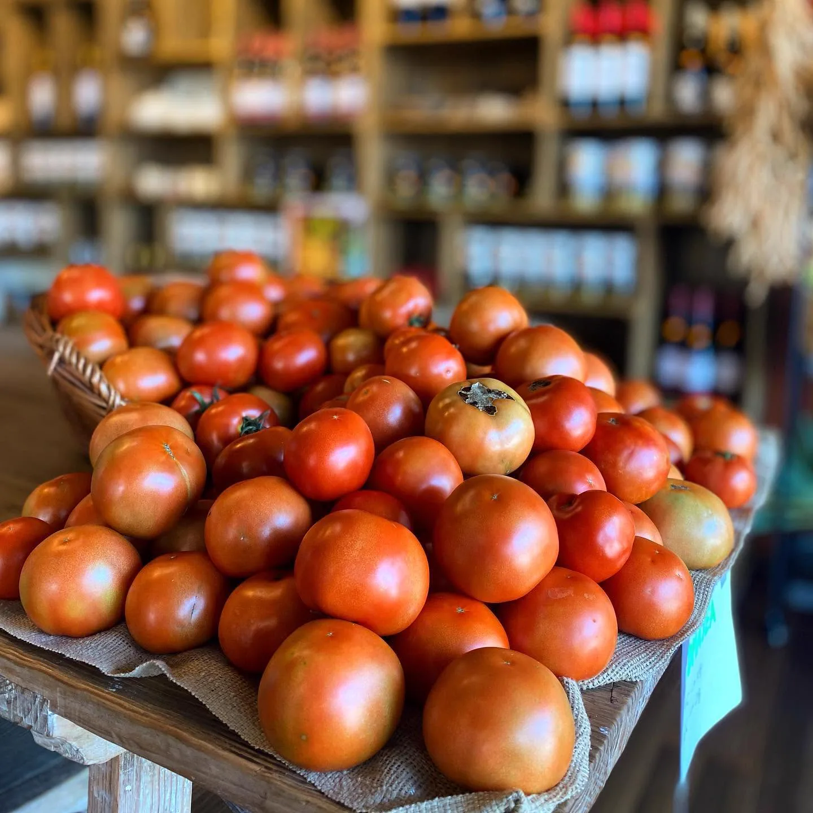
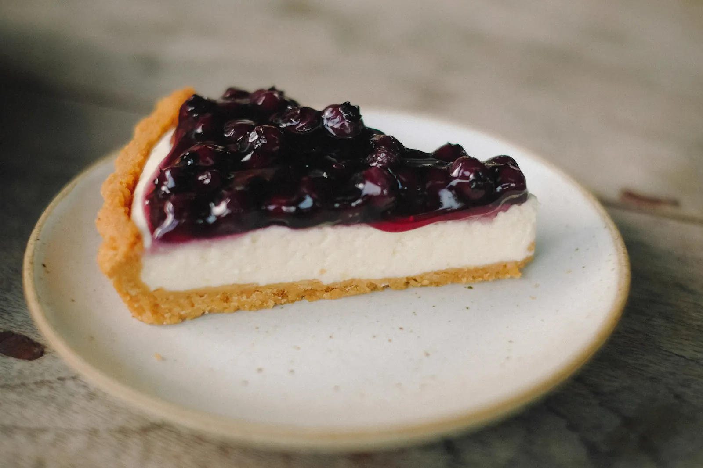
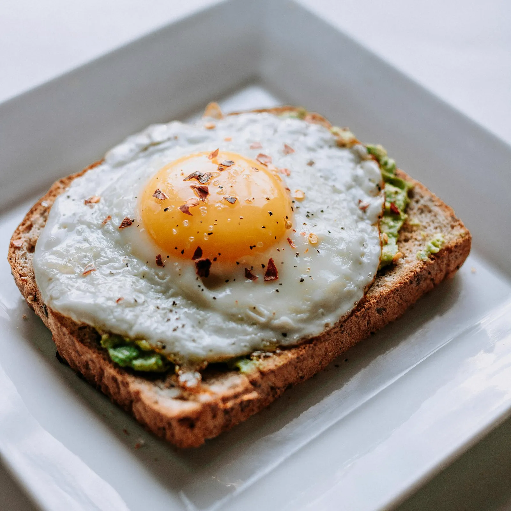
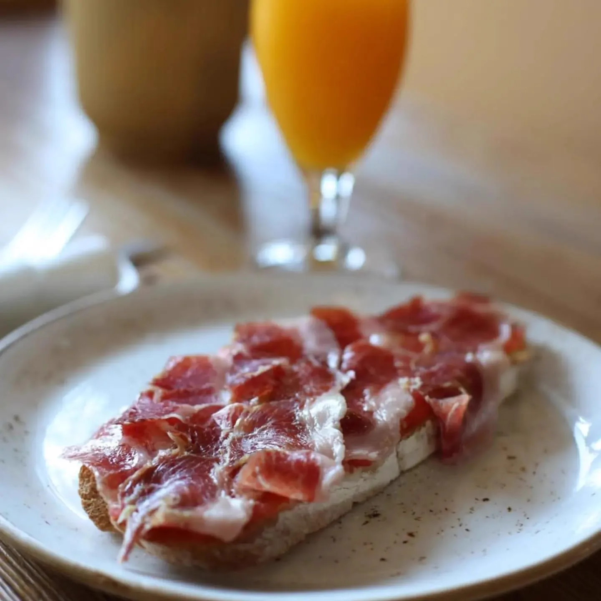
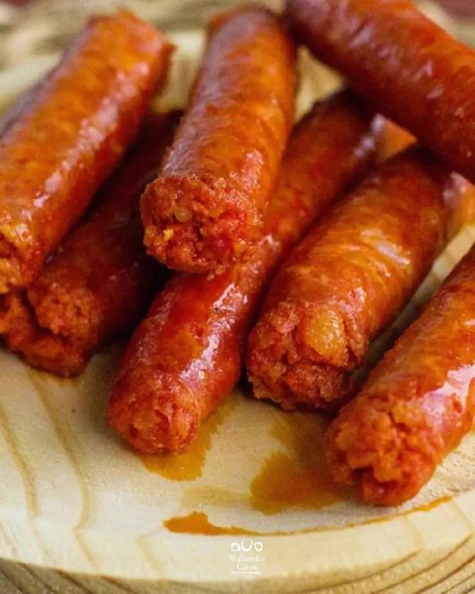
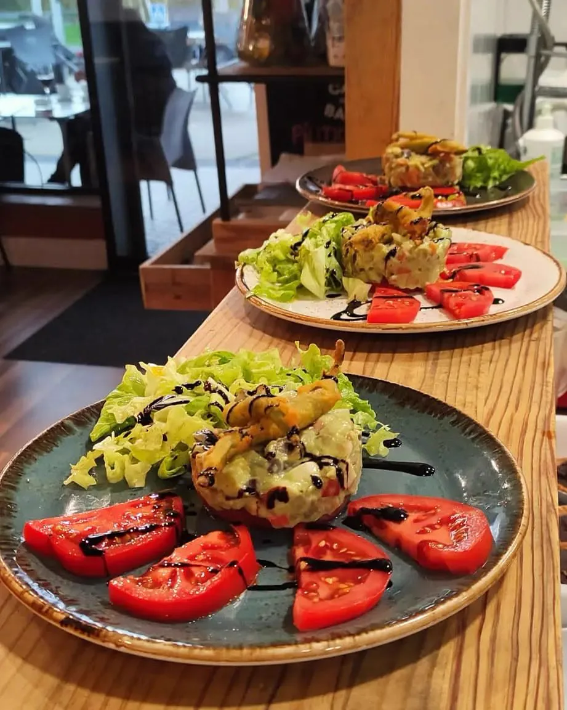
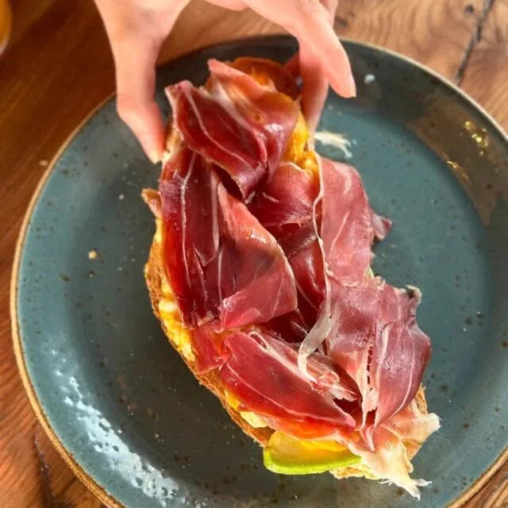
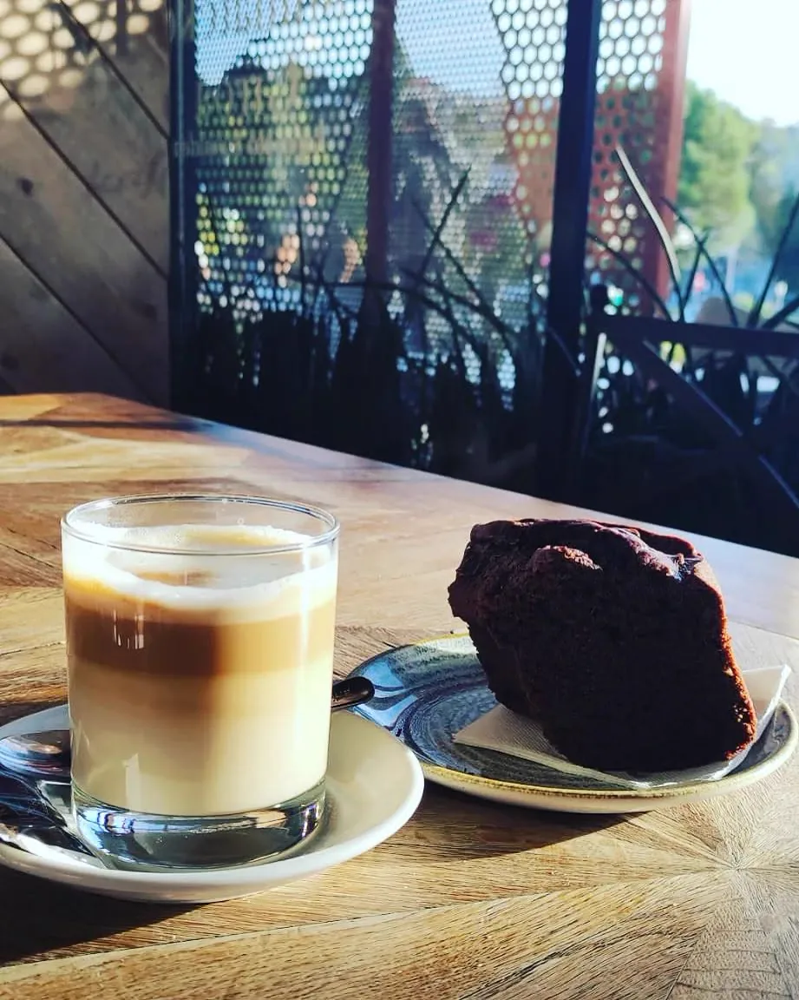
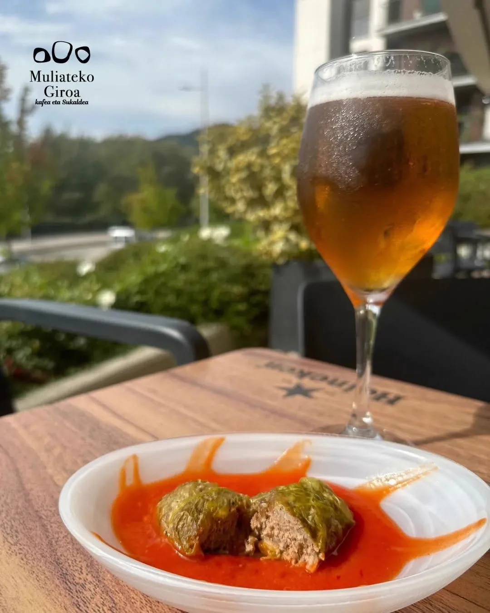

Un lugar precioso para quedarse
Luz, plantas y una terraza tranquila en la plaza de Muliate.
Tostadas sobre pan recién horneado, café como mandan los cánones y la mejor pastelería casera del barrio de Muliate. Cafetería, panadería y tienda con producto de los caseríos de aquí al lado.
Tostadas de pan recién horneado, buen café y pastelería casera en Muliate.
Quiénes somos
Un mismo sitio para tu café de la mañana, tus raciones del mediodía, la merienda dulce y llevarte pan y verdura de los caseríos de al lado. Cuidar. Eso es lo que hacemos.
Luz, plantas y una terraza tranquila en la plaza de Muliate.
Tostadas sobre pan propio y café de verdad. Lo que nos hizo famosos.
Pan, bollería y postres caseros que salen del horno cada mañana.

Pan artesano y verdura de los caseríos cercanos, para llevar.
De lunes a viernes, cocina casera y raciones generosas.

Lo que más nos piden

Sobre pan recién horneado

De jamón, 14 unidades

Bravas, chorizo a la sidra, calamares

Con producto de temporada
Tarta de queso, bizcochos, napolitanas


Nuestra historia
«Las claves para una buena tostada» — así nos presentó EITB. El pan, el punto del café y el producto.
Nacimos como un nuevo concepto en el barrio de Muliate: cafetería, panadería pastelería y tienda delicatessen, todo en uno. Trabajamos con verdura, hortalizas y legumbres de las huertas de Hondarribia, horneamos nuestro propio pan y hacemos los postres en casa.
A cualquier hora
Café y tostada recién hechos, brunch tranquilo y la bollería del día. Abrimos a las 7:00.
Menú del día, raciones para compartir, ensaladas, hamburguesas y platos combinados.
Merienda dulce en la terraza, un buen café y pan y verdura para llevarte a casa.
Opiniones reales
La mejor tarta de queso que he probado en mi vida. Cantidades generosas y precio muy adecuado. Muy recomendado.
Menú de Navidad con jamón buenísimo, croquetas, chipirones y un chuletón de medio kilo de muerte. Totalmente recomendable.
Instalaciones muy luminosas, con amplia terraza soleada. Bollería recién horneada y bizcochos deliciosos. Productos buenísimos.

¡Te esperamos!
Los findes nos llenamos rápido. Reserva tu mesa o pásate por la terraza de Muliate.